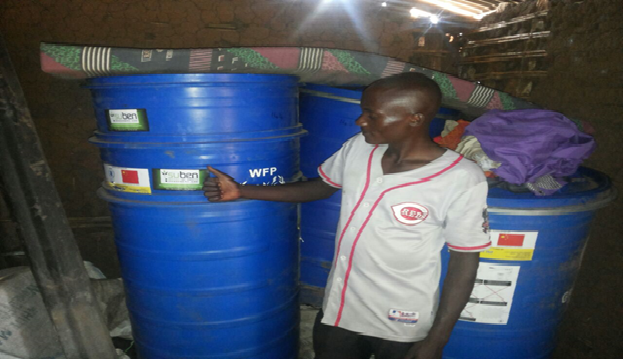
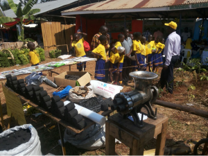
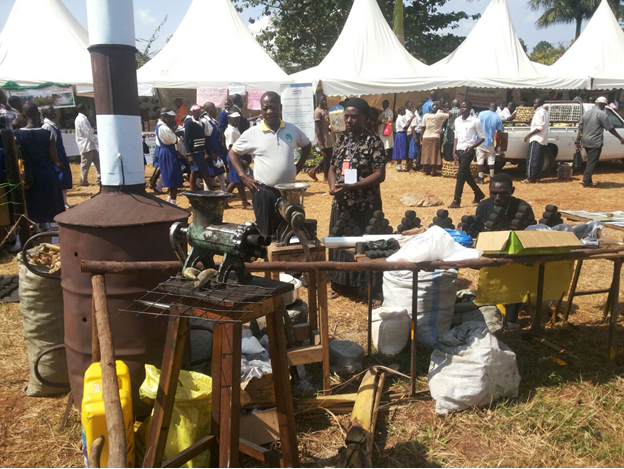

We provide reliable investment, agricultural and business solutions designed to create opportunities and promote sustainable growth.
Suben Investments Ltd is currently partnering with the World Food Programme and Kabarole Research Center (KRC) to distribute post-harvest equipment among households in Uganda. KRC does the training and awareness while Suben carries out the distribution.
This project aims at reaching 4,250 farmers so as to avoid post-harvest grain loss. Storage equipment includes medium metal silos, metal and plastic silos, super grain bags and tarpaulins.

In 2012, Suben Investments Limited partnered with Farm Inputs Care Centre Ltd (FICA) as an agent distributor of agricultural inputs to smallholder farmers in Kamwenge District.
Up to 2015, over 5,000 farmers were served with improved seeds. Suben also supplied Kamwenge Local Government under the NAADS programme and supplied over 2,000 farmers with improved seeds and implements.
Another partner is Samaritan's Purse, which has worked with Suben in farm implement supplies since 2014.
Suben Investment Limited together with Action Africa Help Uganda made a contract on 14th December 2012. Suben Investments Limited constructed three fixed maize cribs for post-harvest handling of maize.
These cribs were constructed at Mahani, Buguta and St. Michael. The cribs were 2m wide and 4m long and had rat guards at the posts.
Suben Investments Limited works with CAPIDA, a briquettes manufacturing organization. Suben Investments Limited does the marketing and distribution of the honeycomb and brooding kits produced by CAPIDA.

During the Climate for Change exhibition, students from primary schools in Kabarole District were trained on the environmental benefits of using briquettes.

Suben Investments Limited offers consultancy in data collection and analysis, feasibility studies and policy research.
Supply of storage equipment with WFP – Ongoing
Distribution of farm implements with Samaritan's Purse – Ongoing
Distribution and management of farm inputs – Ongoing
Suben Farm Inputs shop and store in Kamwenge District – Still Active
Construction and repair of World Vision community refugee schools – Completed in 2013
Supply of energy-saving stoves in Kamwenge District with Kamwenge District Local Government – Completed in 2014
Construction of household cribs at Mahani, Buguta and St. Michael in Kamwenge District – Completed in 2014